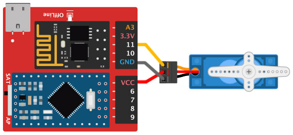
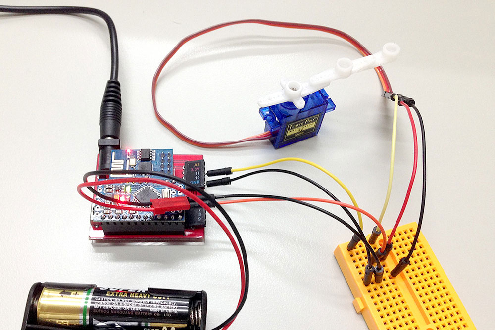
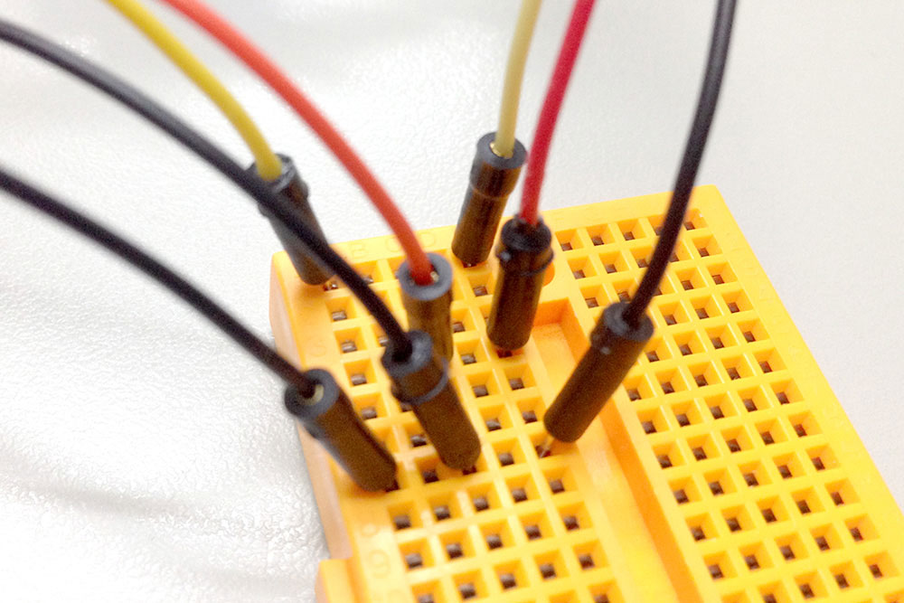
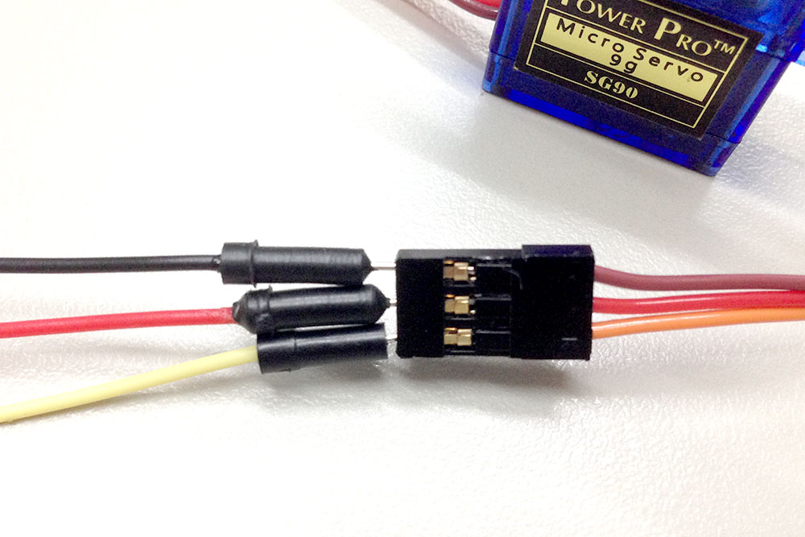

伺服馬達之所以叫做「伺服」馬達，是因為「伺服 servo」表示馬達會依照指示命令動作，由程式要馬達轉幾度，馬達就會轉幾度，但伺服馬達有機械結構上的限制，旋轉的角度是 180 度，但並非完全的 180 度，可能是 1 度到 180 度，或是 -2 度到 177 度都有可能，不過這些誤差都不影響這個範例的實作，這個範例將會介紹如何用 HTML 與 javascript 去控制伺服馬達。
由於伺服馬達需要的電流量較大，因此我們必須採用獨立電源，才能供應伺服馬達足夠的電流量 ( 其實也可以用電晶體的方式，但還是用獨立電源比較容易上手 )，伺服馬達具有三條電線。紅色的為正電，深咖啡色是接地 GND，橘色的則是訊號線，我們利用麵包板，將獨立電源、Webduino 開發板和伺服馬達共地 ( GND 接在一起 )，伺服馬達的訊號源接在 11 的腳位即可。


獨立電源、Webduino 開發板和伺服馬達共地。

紅色的為正電，深咖啡色是接地 GND，橘色的則是訊號線。

在 head 的地方引入相關的 WebComponents，主要是要引入伺服馬達的 WebComponent：wa-servo.html。
<script src="https://webduino.io/components/webcomponentsjs/webcomponents.js"></script>
<link rel='import' href='https://webduino.io/components/webduino/web-arduino.html' />
<link rel='import' href='https://webduino.io/components/webduino/wa-servo.html' />
body 放入 range 以及一個 id 為 show 的 div 來呈現轉動的角度，當然不要忘記放入web-arduino和wa-servo，而 range 的最小值和最大值分別設定 -80 到 80，目的在於避免一些伺服馬達本身無法旋轉到 90 度的誤差，間距設為 10，預設值為 0。
<div id="show"></div>
<input id="r" type="range" min='-80' max='80' step='10' value='0'></input>
<web-arduino id="board" device='你的 device 名稱'>
<wa-servo id='servo' pin='11'></wa-servo>
</web-arduino>
javascript 主要用到伺服馬達的 API：angle，顧名思義就是角度，設定多少馬達就會旋轉多少，但因為 angle 的數值為 0 到 180，range 只設定 -80 到 80 是為了讓左邊為負右邊為正，所以程式上要做點轉換，也就是傳送給伺服馬達的角度會先把數值變成負的，再加 90 就可以。
window.addEventListener('WebComponentsReady', function () {
var board = document.getElementById('board'),
r = document.getElementById('r'),
show = document.getElementById('show');
board.on('ready',function ready() {
var servo = document.getElementById('servo'),
a = 0;
servo.angle= -a + 90; // 讓 angle 不會有負的
show.innerText = a;
r.addEventListener('change',function(e){
var t = e.target;
a = t.value;
servo.angle= -a + 90; // 讓 angle 不會有負的
show.innerText = a;
});
},false);
}, false);
按照上述的步驟進行，應該就可以讓馬達輕鬆轉動，如果還有不清楚的，不妨利用這個 快速體驗，輸入 device 號碼，就可以用 ragne 控制伺服馬達了！